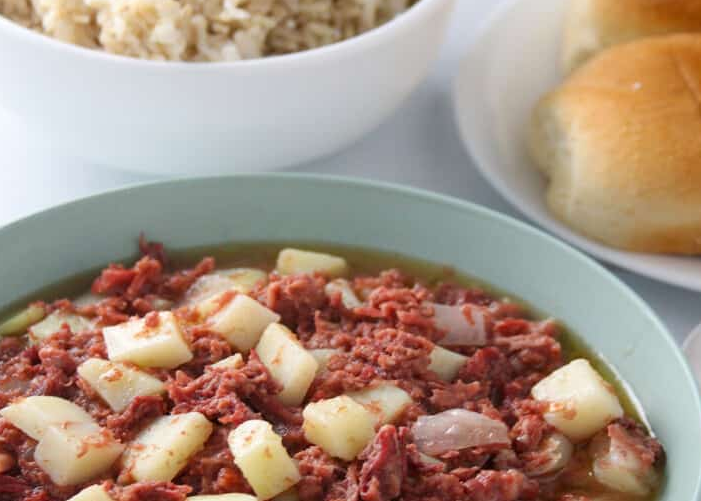

Spicy Corned Beef Recipe

Ingredients
- 2 tablespoons canola oil
- 1 large potato, peeled and diced
- 1 onion, peeled and chopped
- 2 cloves garlic, peeled and minced
- 1 can (11.5 ounces) chunky-style corned beef
- ½ cup water
- salt and pepper to taste
Instructions
- In a skillet over medium heat, heat about 2 tablespoons of oil.
- Add potatoes and cook until lightly browned.
- Add onions and garlic and cook, stirring occasionally, until softened.
- Add corned beef and water and bring to a boil, breaking meat into smaller pieces.
- Cover, lower heat and cook for about 3 to 5 minutes or until potatoes are tender.
- Season with salt and pepper to taste. Serve hot.